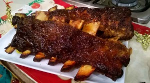
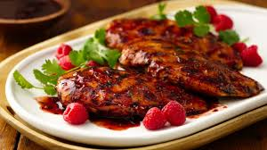
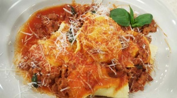
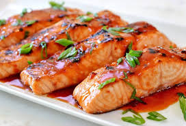
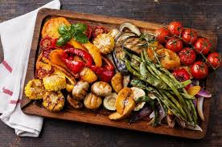
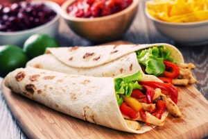

Sabores del día
Rico y sencillo!
Inicio
Receta del día
Recetas de la semana
Las más votadas
Favoritos:






Historial:
25
Canelones de carne y champiñones
12
Canelones gratinados de soja y verduras
9
Empanada gallega de sardinas
31
Gajos de pomelo en almíbar
14
Galette des Rois o Rosca de Reyes como en Francia y Bélgica
60
Hamburguesas rellenas con cheddar
38
Hamburguesa de carne vacuna
24
Locro
7
Mondongo con garbanzos, tomates secos y panceta ahumada
52
Pan con jamón venezolano
33
Rosca de Reyes
12
Salmón rosado al vapor seco con cous cous y almendras
45
Torta glaseada de mandarina y almendras
column2